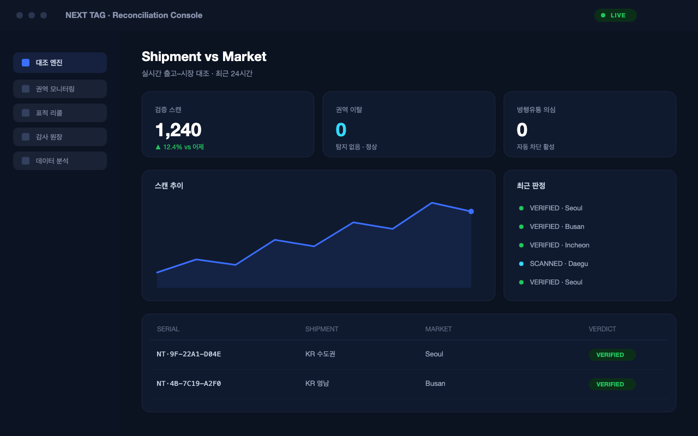

규칙 없는 1회성 난수 코드와 서버 대조로, 위·변조·중복 스캔을 즉시 식별합니다.
모든 제품에 규칙 없는 개별 난수 키를 부여합니다. 다음 값을 추정·복제할 수 없어 표면이 같은 QR이라도 내부는 모두 다릅니다.

* 제품 예시 화면 · 교체 예정
소비자는 휴대폰 기본 카메라·웹으로 스캔하면 서버 대조로 즉시 정품 여부를 확인합니다. 설치 장벽 없이 인증률을 끌어올립니다.
동일 코드가 반복 인증되거나 물리적으로 불가능한 거리를 이동하면 위조·복제로 분류합니다. 미등록 코드·중복 스캔을 즉시 차단하고 브랜드에 알림합니다.
* 제품 예시 화면 · 교체 예정
정품 확인과 동시에 이벤트·사용법·재구매 등 브랜드 콘텐츠로 연결합니다. 물리(봉인 라벨)와 디지털(난수+서버 검증)을 결합한 2중 보안으로 신뢰를 완성합니다.
복제할 수 없는 정체성을 제품마다.